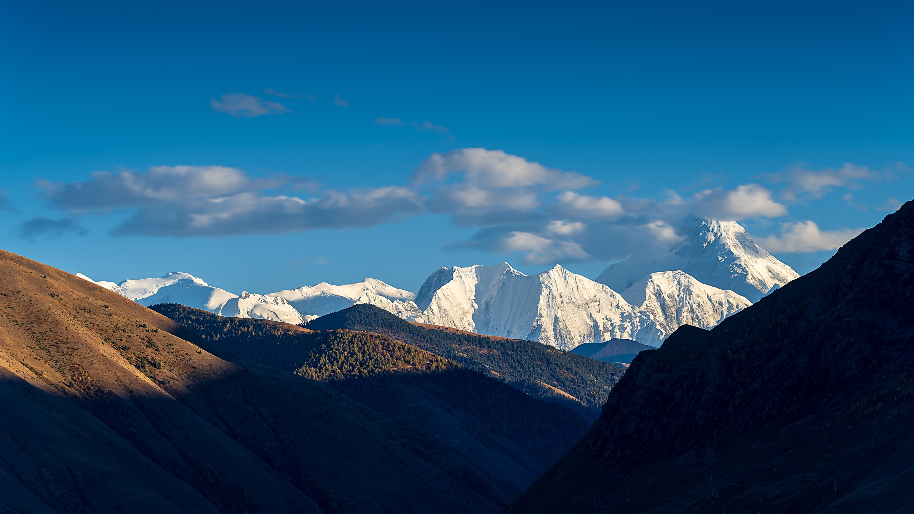
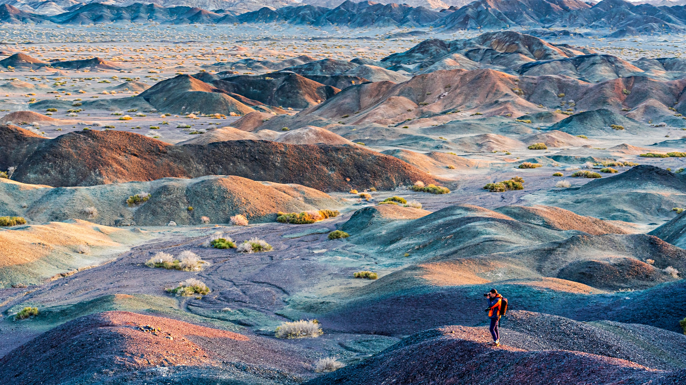

PHOTOGRAPHY
摄影
风光、旅行与人文民俗。每一个专题，都是一段持续观看与行走的记录。

专题 01 · 21 幅青藏高原雪山、寺院与高原上的人们
专题 02 · 26 幅行摄新疆从吐鲁番到帕米尔高原PHOTOGRAPHY
风光、旅行与人文民俗。每一个专题，都是一段持续观看与行走的记录。

专题 01 · 21 幅青藏高原雪山、寺院与高原上的人们
专题 02 · 26 幅行摄新疆从吐鲁番到帕米尔高原